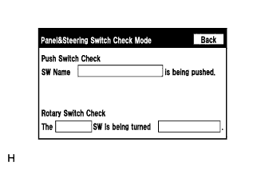

СИСТЕМА НАВИГАЦИИ (для моделей с жестким диском) > Не работают панельные переключатели |
| 1.ПРОВЕРЬТЕ ПАНЕЛЬНЫЙ ПЕРЕКЛЮЧАТЕЛЬ |
Убедитесь в отсутствии рядом с переключателями инородных тел, препятствующих их нормальной работе.
|
| ||||
| OK | |
| 2.ПРОВЕРЬТЕ ПАНЕЛЬНЫЙ ПЕРЕКЛЮЧАТЕЛЬ |
|  |
Войдите в режим "Display Check" (проверка дисплея) и выберите пункт "Panel Switch Check" (проверка панельных переключателей) (Нажмите здесь).
Попробуйте поуправлять неисправной кнопкой и убедитесь в том, что название и состояние кнопки отображаются правильно.
|
| ||||
| OK | ||
| ||